家計の全体像が見えない個人
Pain銀行・ローン・証券など複数機関に資産が分散し、純資産推移が把握できない。
Gain自然言語クエリで純資産を即時可視化。専門知識不要のリアルタイム把握。
Public Briefing / ChatGPT Personal Finances
2026年5月15日、OpenAIがロールアウトを開始した「Personal Finances」機能は、ChatGPTを"会話するAI"から"実データに接地した意思決定OS"へと押し上げる転換点でした。本稿は、その戦略的価値を「転換点 → 痛点 → 設計思想 → 価値創出 → 日本と未来」の5幕で読み解きます。
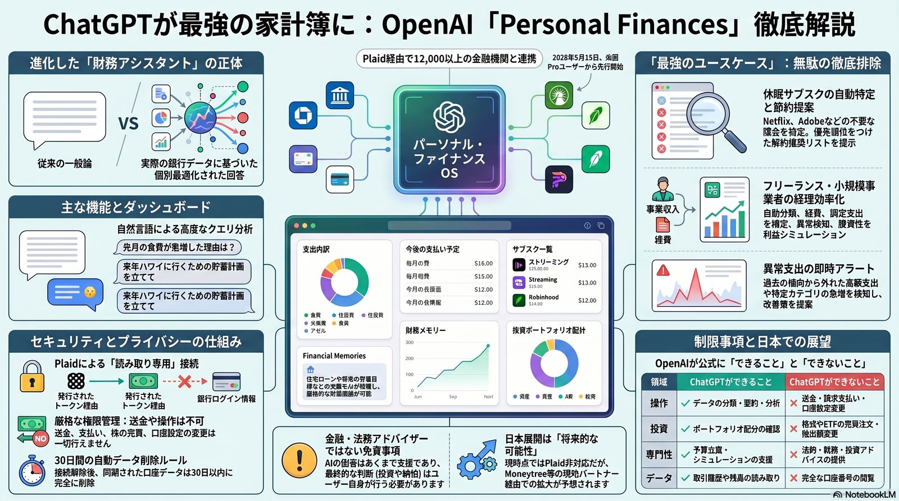
これまでのAI財務アドバイスは、一般統計に基づく抽象論に終始していました。Personal Finances機能は RAG（検索拡張生成）アーキテクチャ でユーザー自身の銀行・証券の生データをコンテキストに引き込むことで、AIを「実務財務パートナー」へと変えます。OpenAIの戦略は「情報の生成」から「意思決定の支援」へ明確にピボットしました。
月額200ドルのChatGPT Pro向けプレビューという価格設計は、単なる個人ユーザーではなく 高ROIを求める専門家層 をターゲットにしている合図です。AIエージェントが金融という機微領域に入る最初の本格事例として、業界全体の評価基準を引き上げます。
左図は「一般論を返すAI」から「実データに基づいてアクションを返すAI」への変化を一枚で示します。違いは賢さではなく、AIが どこに接地（Grounding）しているか です。
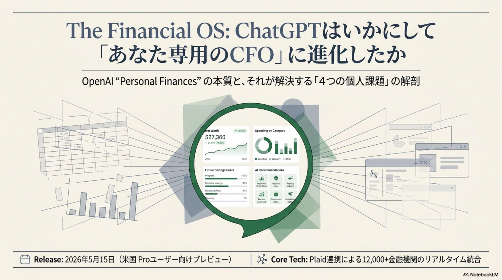
複数の銀行、クレジットカード、投資アプリ。データの分断こそが、合理的な意思決定を阻む最大のボトルネックです。Personal Financesは、4つの異なるペルソナの痛みに対して、それぞれ違う処方箋を提示します。
Pain銀行・ローン・証券など複数機関に資産が分散し、純資産推移が把握できない。
Gain自然言語クエリで純資産を即時可視化。専門知識不要のリアルタイム把握。
Pain忘却したサブスクが年間数万〜数十万円単位で家計を削っている。
Gain利用頻度の低い契約を特定し、解約優先順位とインパクトを提示。
Pain住宅購入や教育資金の精緻なシミュレーションが手作業では困難。
Gain過去の支出傾向を反映したキャッシュフロー計画を対話で立案。
Pain会計知識の欠如で、予実管理や資金繰り予測が後手に回る。
GainVariance Analysis・Forecast Commentaryを自動化。$200/月を即回収。
口座、支出、サブスク、投資ポートフォリオが ひとつの文脈に統合 されることで、AIは初めて「あなたにとって正しい選択」を語る土台を持ちます。可視化ツールは数多ありますが、可視化と意思決定の間には深い溝があり、その橋渡しがこの機能の本質です。
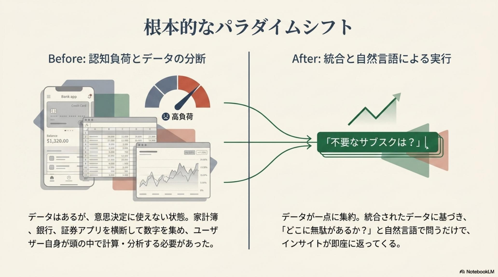
本機能は「Read-only（読み取り専用）」という厳格な設計思想で貫かれています。AIに"軍師"の役割を与えるために、あえて"手を出させない"設計を選んだ点が、信頼の土台です。
業界標準のPlaidを介してOAuth認証。OpenAIはユーザーの銀行ログインパスワードを 一切保持しません。発行されるのは読み取り専用トークンのみ。
AIモデルの訓練にデータを使うのではなく、回答生成時に必要な財務データのみを 一時的にコンテキスト として呼び出す設計。鮮度と安全性を両立。
同期済みデータは30日間利用されなければ自動削除。Financial Memories（貯蓄目標等の文脈情報）もユーザーが個別削除可能で、永続性を完全にコントロールできます。
| リスク類型 | 具体的な脅威 | 戦略的緩和策 |
|---|---|---|
| トークン漏洩 | 第三者がアクセス権を奪取 | Plaid Portalで即時切断 / AES-256によるトークン暗号化 |
| アカウント乗っ取り | ChatGPTログイン突破 | 多要素認証（MFA）の必須化。これが最大の防御壁 |
| 分類・推論ミス | AIが支出カテゴリを誤認 | RAG精度向上 + 手動修正機能で人間が最終承認 |
| データ侵害 | 2026年5月Money ForwardのGitHub関連インシデント | 生の認証情報を保持しないトークン方式は構造的に堅牢 |
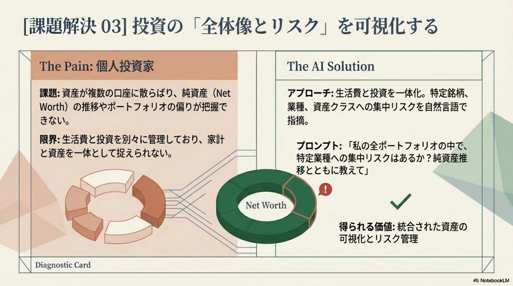
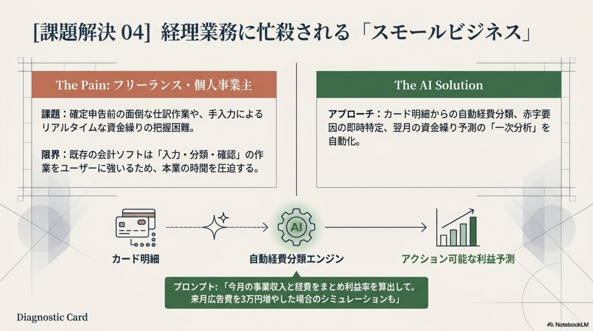
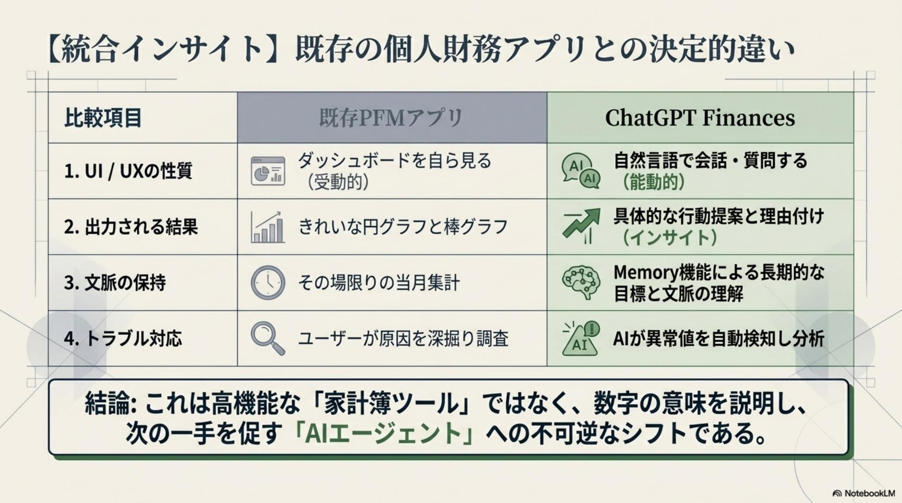
著名投資家Mark Cubanが「既存の予算管理アプリを破壊する」と評した通り、AIは単なるリスト表示を超え、データの"意味"を解釈して行動を促します。可視化が終点ではなく、出発点になる構造です。
利用頻度・目標達成への影響・代替手段までを統合して提示。「無駄を放置している」認知的不協和を解消し、金銭的・精神的リターンを両取り。
「過去12ヶ月の支出を分析し、pending transactionsを除外した上でデータ範囲を明示して要約せよ」のような制約付きクエリで、データ信頼性を担保。
「今日のキャッシュフロー見込みと来週の支払期限は？」と一問。出社前にvariance analysisが対話形式で完結し、意思決定の重力が消える。
家計簿アプリは 過去の事実 を整理しますが、Personal Financesは 未来の選択肢 を提示します。両者の差は、対話によって"次の一手"を生み出せるかどうかにあります。意思決定の所要時間こそが、本機能の真の通貨です。
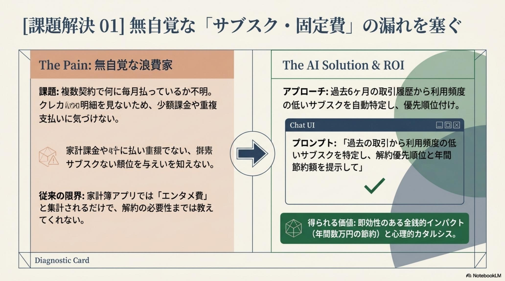
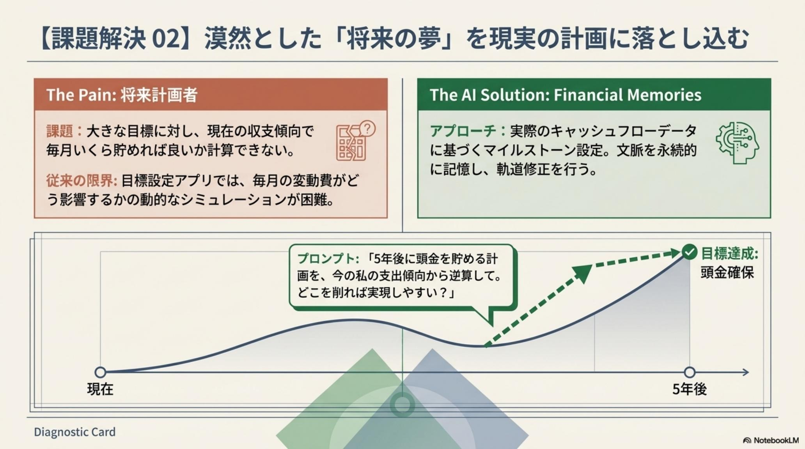
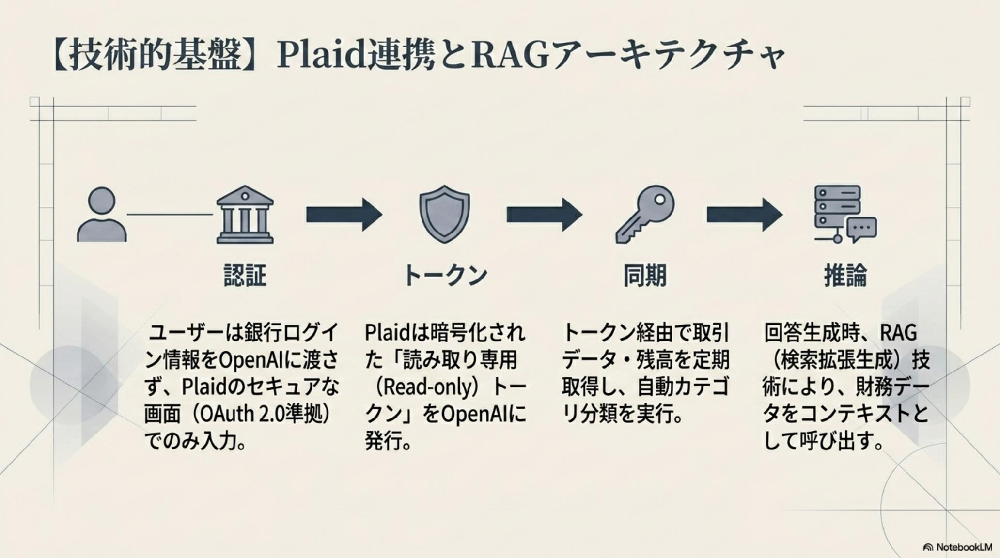
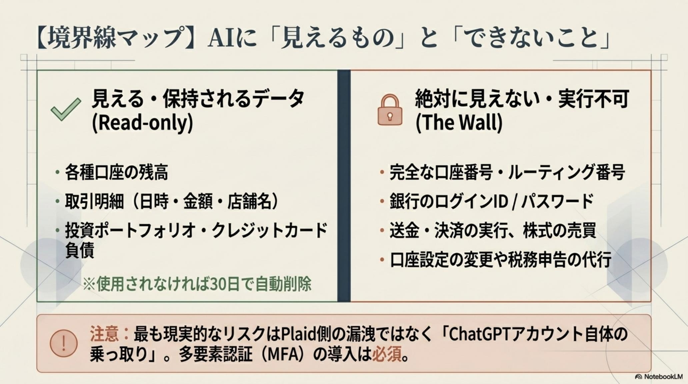
日本市場ではMoneytreeやMoney Forwardが国内銀行API連携で先行しますが、情報の"解釈"と"対話型アドバイス"においてChatGPTが圧倒的に優位。2026年5月のMoney Forwardインシデントを受け、グローバル水準のセキュリティモデルとの統合が市場再編のトリガーになります。
米国Pro($200/月)から段階開放。Plaidが対応する12,000以上の金融機関に接続可能。日本連携は未対応。
国内銀行APIとの直接連携、または中継コネクター経由での接続が始まる可能性。先行PFM企業のポジション争いが本格化。
個人事業主の予実管理から節税提案までAIが完結。会計士の役割は再定義され、AIに対する"監督"が新たな職能になる。
AIがユーザーに代わって通信キャリアや保険会社とプラン自動交渉。家計簿アプリは淘汰され、AI OSに統合された「財務エージェント」が主流に。
本機能の本質的価値は 「対話による意思決定の民主化」 にあります。これまで富裕層のファミリーオフィスだけが享受できた高度な財務分析が、月額200ドルで全Proユーザーに開放されました。ただし、武器を持つ者には作法が要ります。
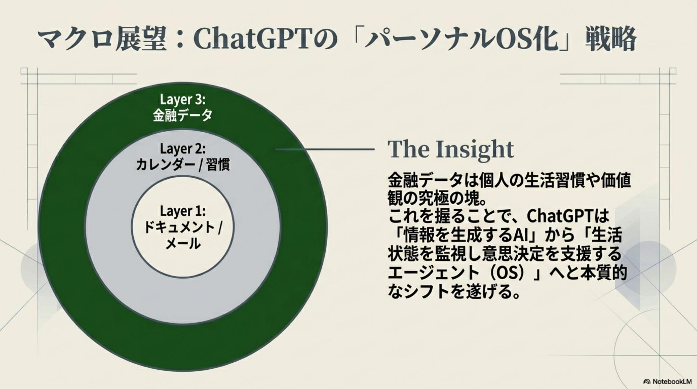
本稿の各幕で参照した解説スライドの一覧です。本文と図を対応させて再確認したい場合に参照してください。
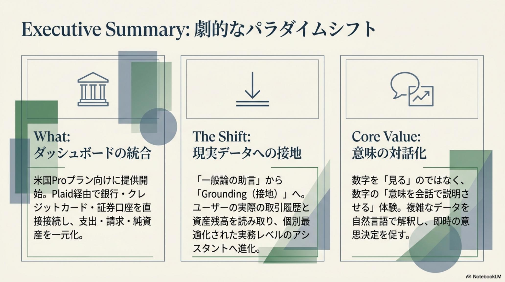
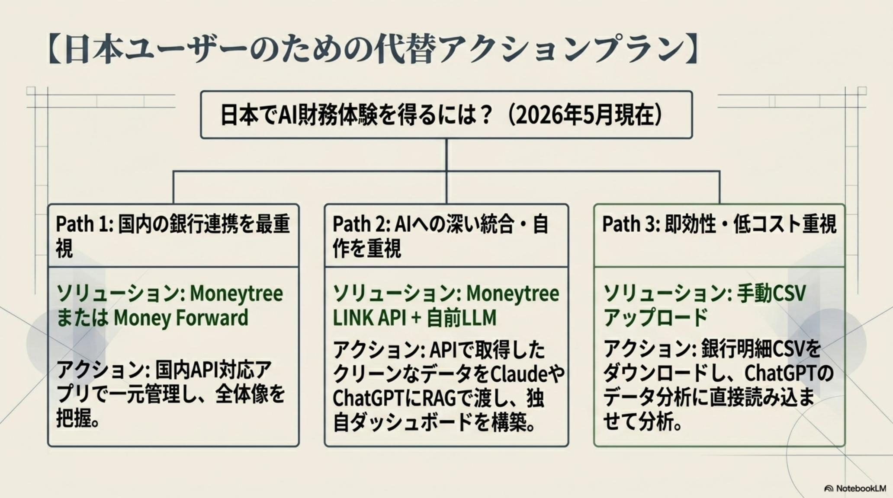
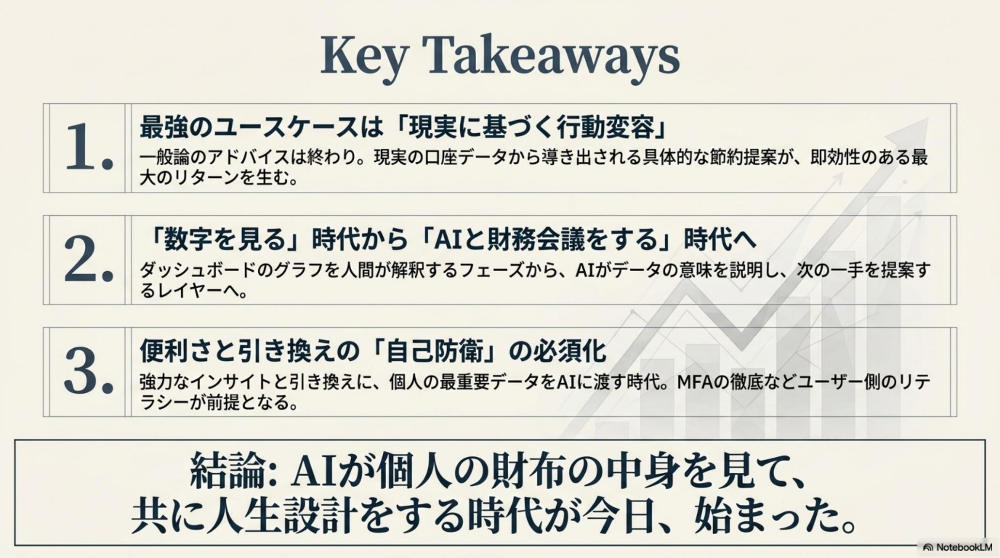